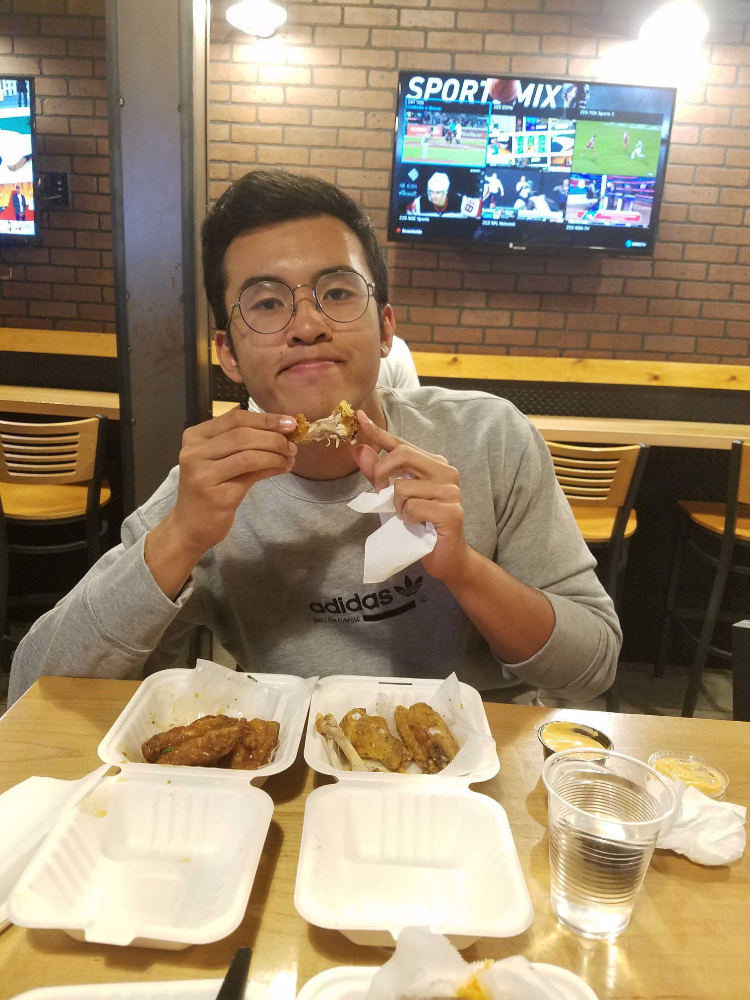
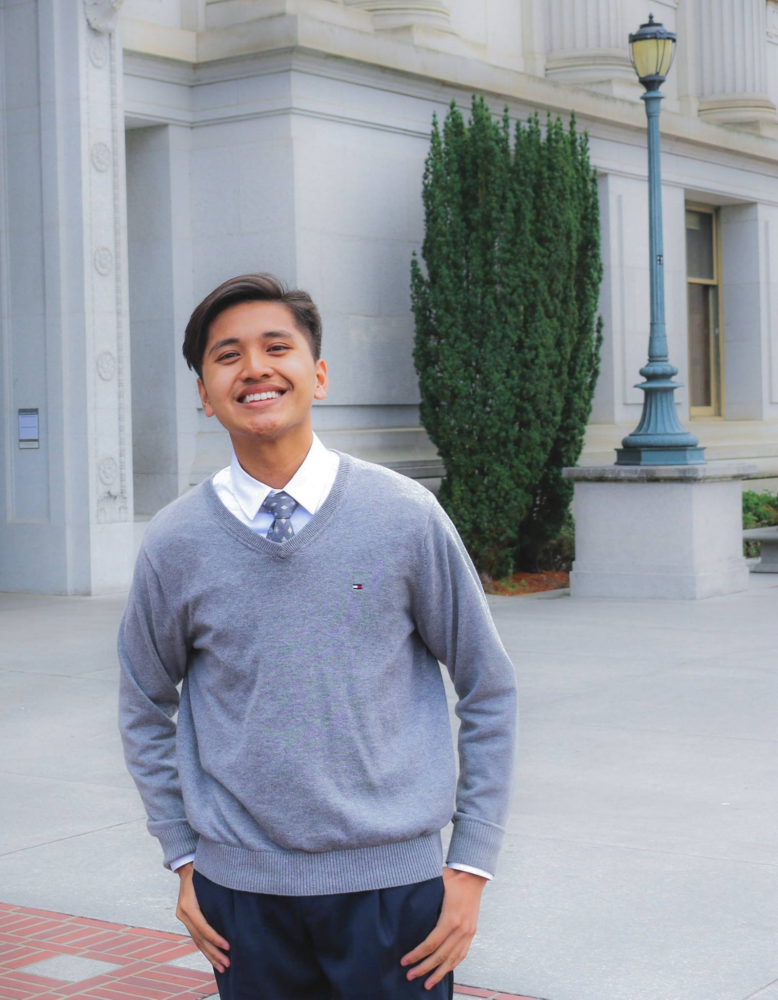
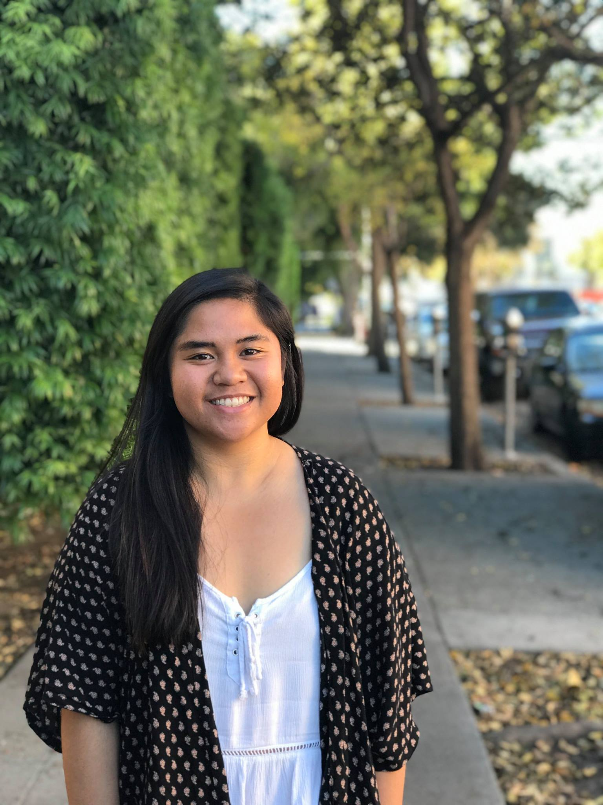
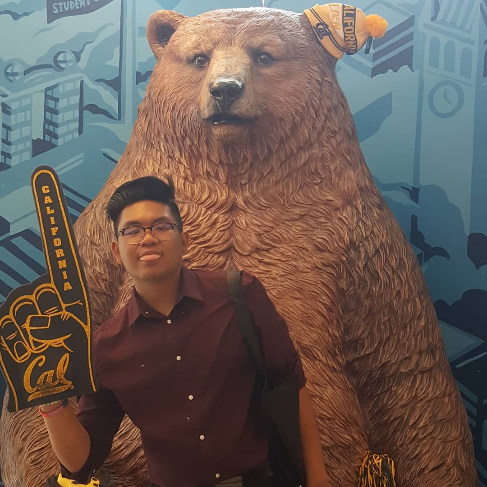

The people that make PASAE
Week of October 21

2023
he/him/his
Say hello to our third intern of the week, Joseph Casey! Joseph is a first year from Chula Vista, California and is a declared Architecture major, though he is still exploring other fields, particularly the life sciences. What drew Joseph to Cal was the incredible flexibility the school offers when it comes to exploring different areas of study. Whereas other schools he gravitated towards attending--mainly Cal Poly SLO--were more strict with changing majors, he appreciated how Cal would have allowed him to explore multiple options. Joseph also found our campus’ diverse student population more comfortable, an environment he grew accustomed to in high school. Joseph also told us how Senior Weekend played a significant role in choosing to attend Cal. To this day, he is still close friends with those he met at Senior Weekend.
When Joseph isn’t studying for midterms, he enjoys going on late-night runs to Durant Food Court or listening to nostalgic childhood music videos like Big Time Rush because he believes that college should be fun! He also said he likes to, “try new things,” but when asked to specify, he declined to further comment. ;p Joseph also likes hanging out in his room with his floormates. As one of the only rooms with an open-door policy, he says his room became a, “quad converted to a lounge,” and it’s not uncommon for others to come in to hang out or study. Additionally, Joseph works for the Daily Cal as a layout designer. He says that he helped out with designing his high school’s newspaper, which is what drew him to working with the Daily Cal. Joseph also says working in journalism is what initially motivated him to pursue design and architecture.
When asked whether Cal is living up to his expectations, Joseph thought everyone here would be snakes! However, he says that the reality of it is that there are a lot of really nice people and it just matters who you choose to surround yourself with. For him, a big part of that has been PASAE and the community it fosters. He really likes PASAE and believes the work PASAE does is meaningful. He values the professional development and mentoring the organization provides. As an intern for Keziah, he says he’s benefited from the resources and guidance she has given him, including photography and editing skills.
Joseph says that the best about coming to Cal is how independent he has become. Now that he no longer has his parents to watch over him, he’s learned to be more self-sufficient and how to manage his time better. However, Joseph is still learning to be independent. He’s been sick twice now and normally when he’s sick, his lola or mom would make him soup or calamansi juice. Now that he doesn’t have that, he says he’s definitely learning to take care of himself!
Week of September 30
Chemical Engineering 2022
she/her/hers
Our very first intern of the week is Audrey Aniag! She is currently a second year here at Cal. Although she was initially a Chemical Engineering major, she plans to switch into Material Science Engineering. She first liked Chemical Engineering, but after taking her first introduction class in MSE, she instantly fell in love with it and is having a great time in her MSE classes! Audrey is from San Diego, California (“858, yo!”) She is specifically from Mira Mesa, the filipino town of San Diego. Her home is actually only a short walk away from Seafood City. When making her deciding on where to go to college, she wanted to go to experience a new environment, differing from where she grew up. She already decided to attend Cal based on the prestigious programs here, but when she attended bridges’ Senior Weekend under PASS (The Pilipinx Academic Student Services), it only confirmed her desire to attend Cal.
During Senior Weekend, her Ates (mentors) were Danielle Carino, Jilian Cabornay, and Hopey Balatan! It was through her Senior Weekend Ates where she was influenced to look into and join PASAE! When she first joined PASAE for their first event, she was immediately attracted to their vibrant personalities. She really enjoyed everyone’s caring and warm personalities, and how inclusive they all were to new members. She stayed in PASAE, because she gets a sense of community in PASAE. During her first year at Cal, she was feeling pretty homesick and was isolating herself in a beginning. However, after warming up with people in PASAE, she started hanging out with her fellow peers and started feeling closer to them, creating a strong bond with each and everyone of them. Her favorite part of PASAE is that she is able to ask advice from upperclassmen about anything whether it’s about classes, academics, or just life in general. She enjoys everyone in PASAE! Her favorite memory from her time in PASAE is watching Travis doing the worm (Ask Travis to sample). During her free time, she likes to spend a lot of time with Camille, her Senior Weekend sib, as well as with her friends in PASAE. She also loves to sing (no sample though 😔) and likes to watch HGTV in her spare time. She likes watching Fixer Upper and Property Brothers.
During times when school seems to be too much for her, she looks to her mom for motivation. Growing up, she felt like she wasn’t as close to her as she is now. However, now that she is away from home, she feels like she can open up to her more and her mom reciprocates the same feeling. Learning about the struggles her mom went through, it only encourages Audrey to be successful in school. During her past year in Berkeley, she has learned to love and accept herself for who she is. In high school, she felt like she was constantly comparing herself to other people but after being around very strong, confident people in college (Keziah, Andrew, Dani), she felt like she has learned of her own worth and learned that it is useless to compare oneself to other people. She feels like she can now confidently say that she genuinely loves herself and who she is.
Week of October 7

Intended Data Science and Media Studies, 2023
he/him/his
We have our second intern of the week, Conner Manuel! Conner is a first year International Student intending to study Data Science and Media Studies. He was born and raised in the Province of Laguna, Philippines. Originally, he had no intention of applying to school outside of the Philippines. However, after going to academic boot camps, he wanted to see how he would compare outside. After doing further research, his desire to study abroad grew, and he added universities in the west coast and east coast of the United States to the list of schools he applied to.
When asked about activities outside of PASAE, Conner talks about going to the gym, finding new places to eat, and hanging out with friends. While here in the Bay Area, he hopes to try out different restaurants instead of his regular meal at Crossroads. Conner also has a creative side to him. He likes taking/editing pictures as well as has some graphic design experience. When asked about the music he listens to, he talked about how he liked listening to current OPM! Conner also listens to Brockhampton and Frank Ocean. When asked about sports, he said that back in high school, he used to play center in his high school basketball team, so if you’re in need of a center (we’re looking at you, PBA), Conner is just the man for you!
Conner is a new member of the PASAE’dkicks and has been enjoying his time in PASAE. He is currently interning under the CS Representative (Travis Reyes). Through Travis, he hopes to learn more about networking and coding. Although PASAE might be known as a professional organization, Conner values the friendships and mentors he has gained. It’s organizations like these (PASAE, PAA, etc.) that has helped Conner transition into college life while being far away from home. He hopes to make more friends here (although, he seems to be very popular when we were walking down on Telegraph), and is excited for what is to come. He would also like to say, “xD Rawr uwu”
October 2018
Genetics and Plant Biology, 2021
she/her/hers
Our first intern highlight of the Fall 2018 is Nikka Sandoval! She is a third year studying Genetics and Plant Biology. She doesn’t know what she wants to do in the future, but she really enjoys chemistry/biology. Growing up, Nikka moved around a lot, so she has a few hometowns: Hagata, Guam; Manila, Philippines; and San Francisco, California!
She joined PASAE because she wanted to be around fun/great/inspiring/like-minded people and is currently a Social Chair intern. Outside of PASAE, she is also PASS’s External Relations Coordinator! She enjoys getting food with friends, traveling with her family, listening to music, making spotify playlists, and watching Brooklyn nine-nine/friends/criminal minds. When Nikka was a first year in college, she randomly sat next to Jo Apellanes (PASAE's current Historian) at a PASS info session and they became friends! A few weeks later they talked about their hometowns and found out that they lived in Guam at the same time, and that over a decade ago, they were in the same kindergarten class together at St. John’s School (Go Knights!) in Tamuning, Guam and were friends as kids!
March 2019

Data Science and Economics, 2021
he/him/his
Our first intern highlight of the spring semester is Ferdie Taruc! He is a fourth year majoring in Economics and Data Science. Ferdie’s originally from Saipan and moved to California when he was seven years old. He joined PASAE mainly because he wanted to intern under the Historian! Some of Ferdie’s hobbies and interests include fashion, thrifting, going to music concerts/festivals, making playlists for people, and watching anime/tv shows. His favorite shows include Mr. Robot, Master of None, and Atlanta. Ferdie’s also trying to read a book per month this year and get into running, so he can hopefully run a marathon later in the year! After college, Ferdie wants to get a Master’s degree in Data Science or Statistics and get a data science or analyst role in tech or finance. However, later in life he’s trying to move to a rural area in Japan and start his own bakery (message him you know how to make good bread)!
October 2017

Cognitive Science and Linguistics, 2020
she/her/hers
Our next intern highlight of PASAE is Jezel Poliran! She’s from Delano, CA and is currently a second year majoring in cognitive science and minoring in computer science. Fun facts: she loves Shawshank Redemption and cinnamon buns and is also allergic to Dayquil! Her favorite story to share from freshman year is when during her first week at Berkeley, she unconsciously followed someone all the way to BAMPFA even though she was trying to go back to her dorm! She decided to go to Berkeley because of the prestige and financial aid it offered her. Jezel decided to join PASAE after hearing about it at Senior Weekend and to find a support group for STEM majors.
April 2019
Bioengineering, 2022
she/her/hers
Our next Intern Highlight features Romy Mastel! Romy is a second year from Union City majoring in Bioengineering! After undergraduate she wants to go straight into the biotech industry for project management and operations, then go to graduate school. She joined PASAE because she wanted to stay involved with the Filipino Community, since she came from a city with a large Filipino population. She is proud of her heritage and wants to continue to support other Filipino youth by being part of PASAE. Outside of PASAE she has been elected as the Corporate Committee Chair of the UC Berkeley Engineering Society, and will be interning at Potrero Medical this summer! She can play the alto and tenor saxophone and, recently, she began playing the acoustic guitar. Star Wars is her favorite movie series, she loves petting dogs, going to concerts, and wants to eventually take up salsa dancing! Once, Romy made a post on UC Berkeley’s meme page and she ended up getting over 2000 likes!
October 2017
Sociology, 2021
he/him/his
Our first intern highlight of Fall 2017 is Devin Balcorta! He is currently a third year Sociology major from Palmdale, California and a public relations intern for PASAE. He personally chose Berkeley over schools as it was his dream school since he was a kid. His favorite movie is Rent the Musical and if he could be any other major he’d do something with U.S. government. When Devin was a kid he and his family were gonna visit the Philippines. They were flying out of LAX, but he got lost. All of LAX international section was shut down so they could find him. He joined PASAE, so he could connect with an engineering community and because Jo is in it. Much love to Devin! Look out sometime next week for our next intern highlight!
October 2017

Bioengineering, 2021
he/him/his
Our PASAE intern highlight for late October 2017 is Justine Robin Puerto! He’s from Lancaster, California and is a bioengineering major. He likes to dye his hair as a form of expression and his favorite movie is a Thai movie called “Crazy Little Thing Called Love.” His favorite stories to tell are the time he went to karaoke with his paamily (woo Wavy Paam!!) and the small yet meaningful moments he shares with loved ones. Justine chose to go to UC Berkeley because of its prestige and excellent engineering program. However, another key factor in his decision was Senior Weekend. There, he experienced first-hand the love and support from the Pil Community here at Berkeley. He later joined PASAE to follow in the footsteps of his Senior Weekend Ate Corrina and to find a support system here at Berkeley. He says that the people he has met in PASAE have given him a lot of unconditional love and support - emotionally, academically, and professionally. Besides PASAE, Justin is also a current member of BMES (Biomedical Engineering Society).